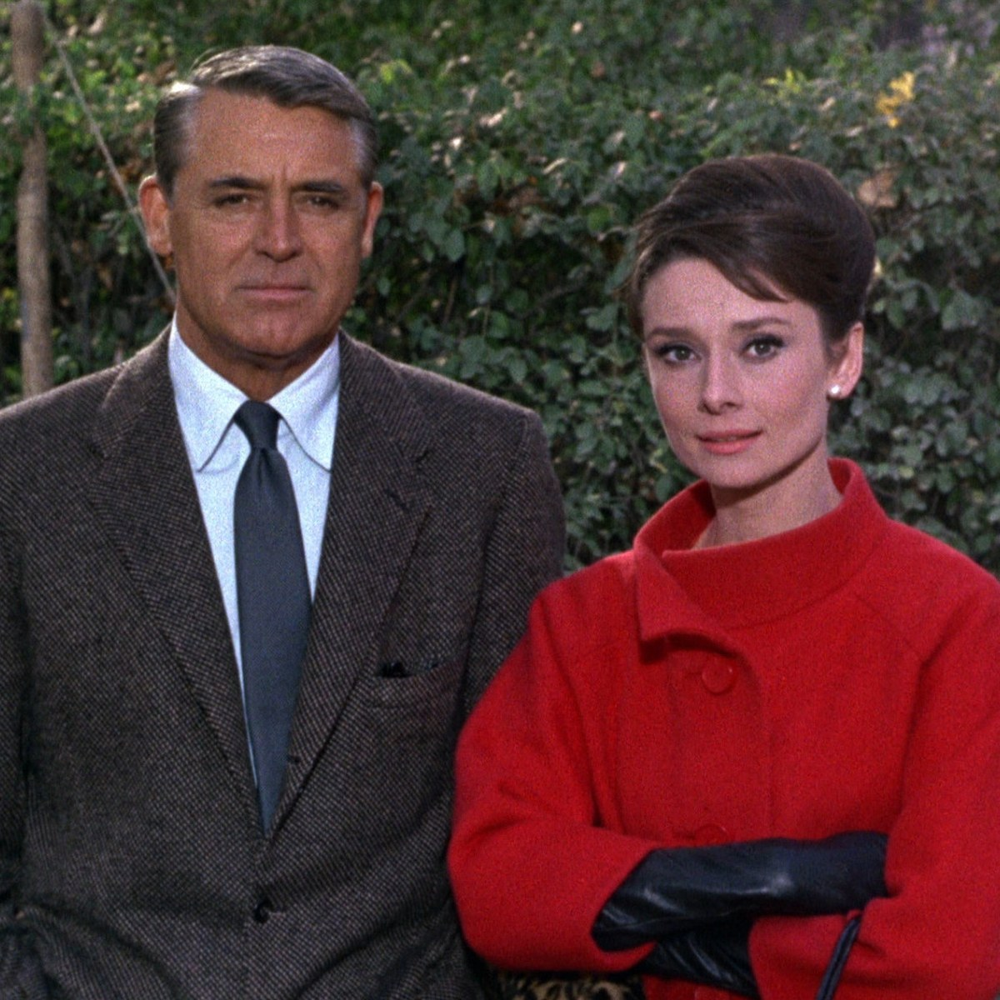

Actor guide
What to send your agent after a busy month:Facts, not a novel.
Agents are drowning in email. A useful update is short, dated, and factual — what went out, what came back, who’s still pending, and which offices saw you. Vibes and paragraphs get skimmed. Numbers get used.
Why bother
Your rep may already see submissions on their side. They don’t always see the full picture: self-submits, near-misses, offices that keep calling you back, or the month that felt dead but wasn’t. A clean wrap-up makes strategy meetings faster — and helps if you’re pitching a new agent with real history.
What to include
One screen, one month:
- How many auditions / self-tapes went out
- Callbacks (and for whom)
- Bookings / penciled / still pending
- Casting offices that saw you more than once
- Anything time-sensitive (dates held, conflicts, travel)
- Optional: one line on type — “mostly copper / mum / best friend again”
Skip the play-by-play of every take. Skip emotional essays unless they asked. If you want depth on rates, point yourself (or them) at booking rate and how to read stats — don’t paste a thesis into the email.
A template you can paste
Subject: August wrap — [Your Name]
Hi [Name] — quick month summary:
- Auditions: 12 (10 self-tape, 2 in person)
- Callbacks: 2 — [Project] ([Office]), [Project] ([Office])
- Booked: 1 — [Project]
- Pending: 3
- Offices seen more than once: [A], [B]
- Notes: available except [dates]; happy to lean into [type] if that’s useful
Thanks — [You]
Adjust the counts. Keep it scannable.
You can’t report what you didn’t log
This only works if statuses are current. Update Booked / Callback / Not Booked when you hear — not the night before the meeting. Same discipline as keeping an audition log and tracking casting directors.
Export from Audition Tracker
In Audition Tracker, filter the month in Stats, glance at outcomes, and export a report when you want something tidy to attach or copy from. Casting names sit with the jobs — pull the ones that repeated.
One-time purchase on iPhone and iPad; Premium optional.
Download Audition Tracker — or build the same bullets from a Sheet. Send it before they have to ask.